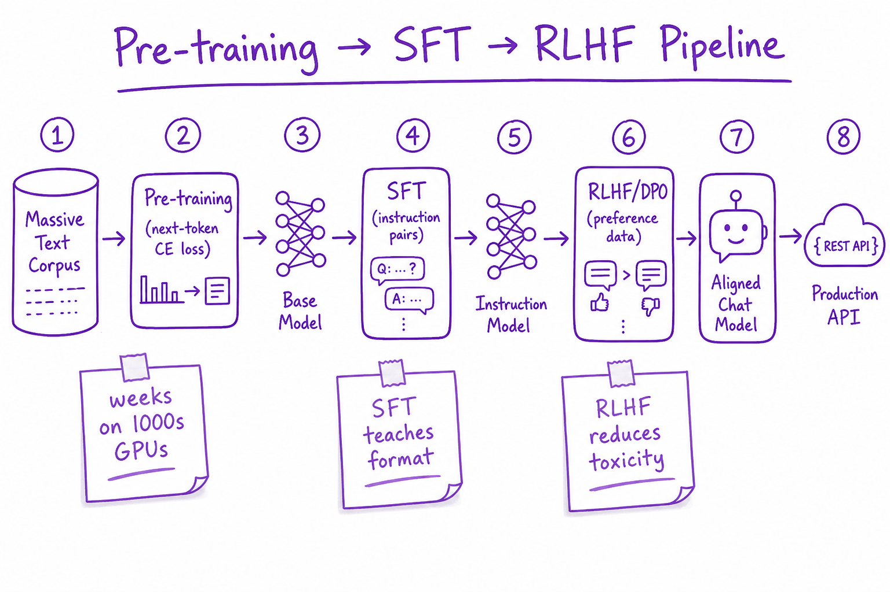
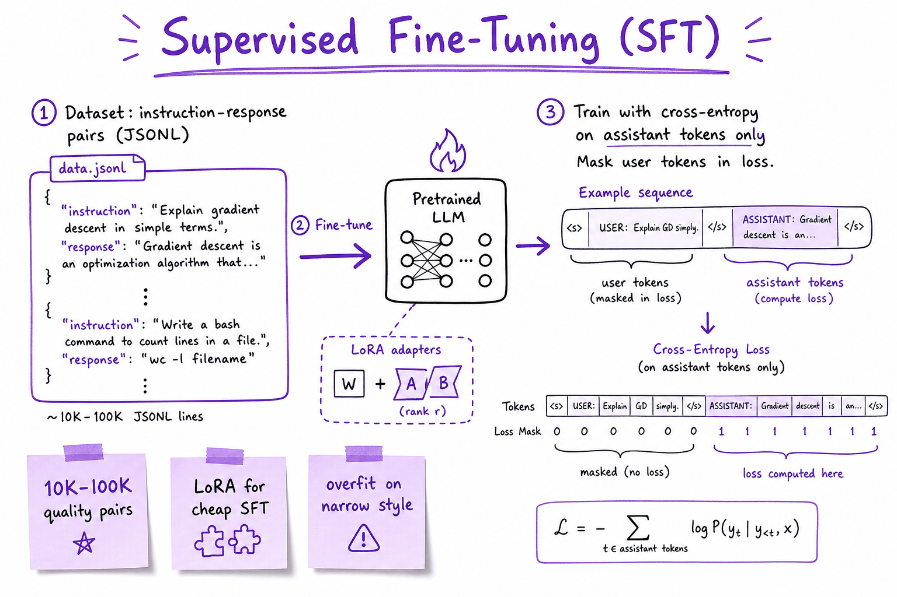
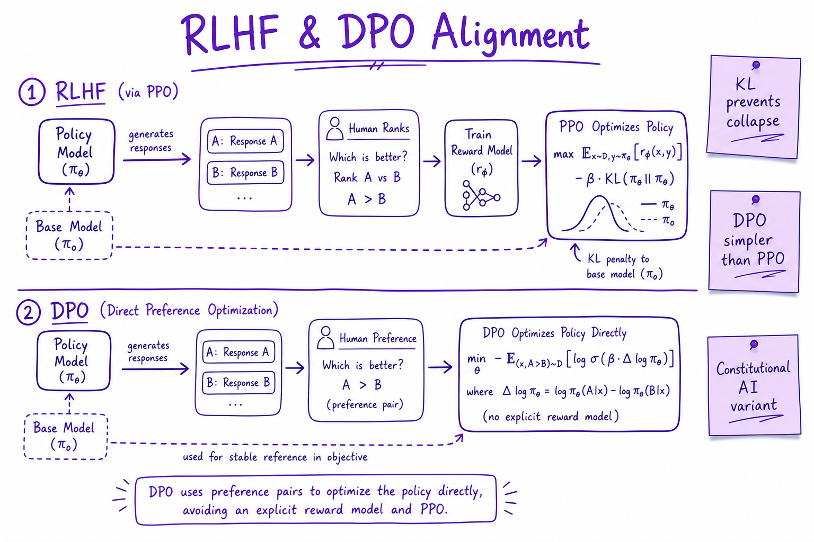

Pre-training, SFT & RLHF // Fundamentals
The three-stage pipeline from internet-scale pre-training through supervised fine-tuning to preference alignment (RLHF/DPO) that turns a base model into a helpful chat assistant.

Corpus pre-training learns next-token prediction; SFT teaches instruction format; RLHF/DPO aligns outputs with human preferences before production deployment.
01 — What & Why
Pre-training learns language from raw text. SFT teaches chat format. RLHF/DPO aligns with human preferences (helpful, harmless, honest).
System pipeline detail: RLHF & DPO Pipeline. Cheap adaptation: Fine-Tuning (LoRA).
01a — Core Concepts
| Term | Definition | Gotcha |
|---|---|---|
| Pre-training | Next-token CE on massive corpus | Stale facts; not your private data |
| SFT | Supervised instruction-response pairs | Quality > quantity |
| RLHF | Reward model + PPO policy optimization | Complex; KL to base |
| DPO | Direct preference optimization | Simpler than PPO |
| Chinchilla | Optimal tokens per parameter | Most apps don't pre-train |
| Alignment tax | Capability tradeoff post-RLHF | May refuse valid tasks |
01b — API Surface
# HuggingFace TRL — SFT
from trl import SFTTrainer
# trainer = SFTTrainer(model, train_dataset=..., peft_config=lora_config)
# DPO
from trl import DPOTrainer
# pairs: {prompt, chosen, rejected}02 — When to Use / When NOT
| Stage | You | Skip |
|---|---|---|
| Pre-train | Foundation lab only | Product teams |
| SFT | Custom tone/format | Prompt fixes enough |
| RLHF | Safety-critical deploy | Internal tools only |
| DPO | Preference data available | No ranking labels |
03 — Architecture
Corpus -> Pre-train (weeks, $M) -> Base checkpoint
-> SFT JSONL (instruction, response) -> Instruct model
-> Preference pairs -> RM + PPO OR DPO -> Aligned model -> API04 — Deep Dive: Pre-training
Self-supervised next-token prediction on web, books, code. Compute-heavy (Chinchilla: ~20 tokens/param). Output: base model that completes text but doesn't follow instructions well.
05 — Deep Dive: SFT

SFT trains on instruction-response pairs with loss on assistant tokens only.
10K–100K high-quality pairs. Mask user tokens in loss. Teaches markdown, tool syntax, refusal templates. Risk: overfit narrow demo style.
06 — Deep Dive: RLHF & DPO

RLHF: reward model from rankings + PPO with KL penalty. DPO: direct preference loss without explicit RM.
RLHF: human ranks A vs B → train reward model → PPO optimizes policy with KL to prevent collapse. DPO: optimize preference likelihood directly — stable, widely adopted.
07 — Deep Dive: Data Quality
Poisoned or biased SFT data propagates to production. Filter PII, toxic pairs, benchmark leakage. Human review on edge cases. Version datasets like code.
08 — Deep Dive: LoRA for SFT
Low-rank adapters train 0.1–1% of params on consumer GPUs. See Fine-Tuning (LoRA) for QLoRA, rank selection, merge vs adapter serving.
09 — Production & Ops
- Most products consume aligned API models
- Track base model version + alignment stage
- Eval before/after SFT on golden set
- Rollback checkpoint if regression
10 — Where It Shows Up
11 — Common Pitfalls
- Benchmark examples in SFT data (eval leakage)
- Skipping SFT and expecting base model to chat
- RLHF without KL → gibberish reward hacking
- Assuming fine-tune injects fresh facts (use RAG)